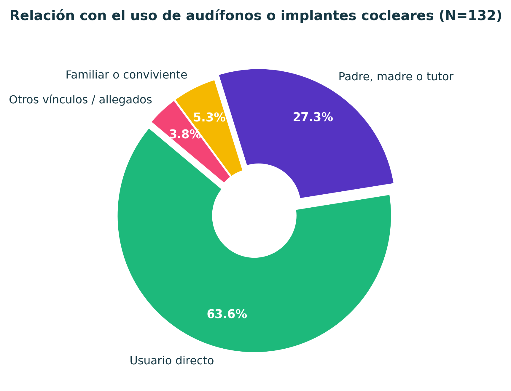
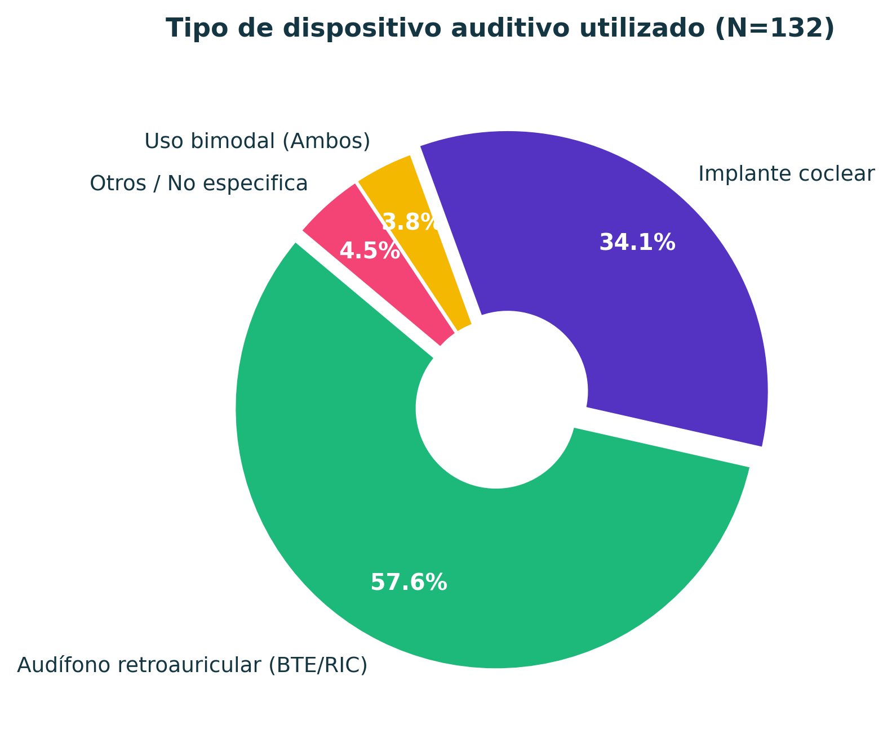
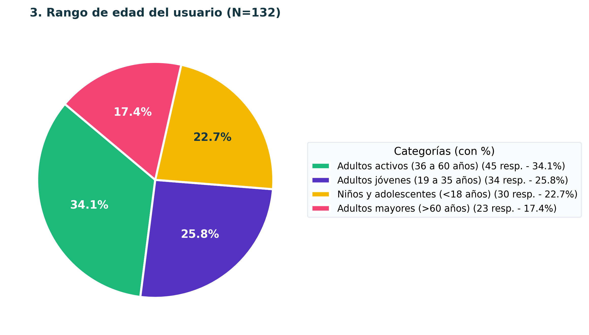
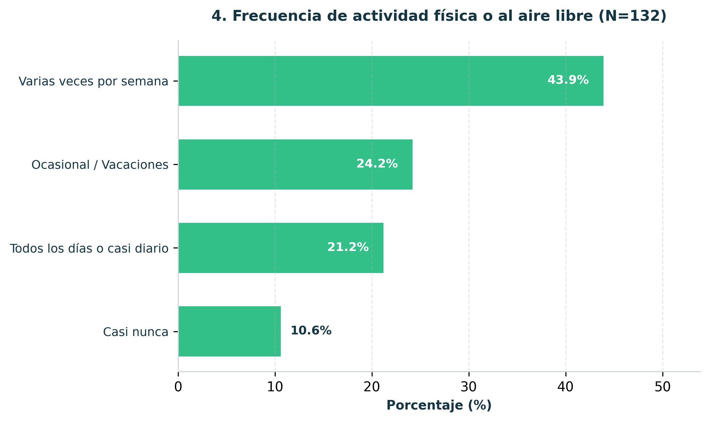
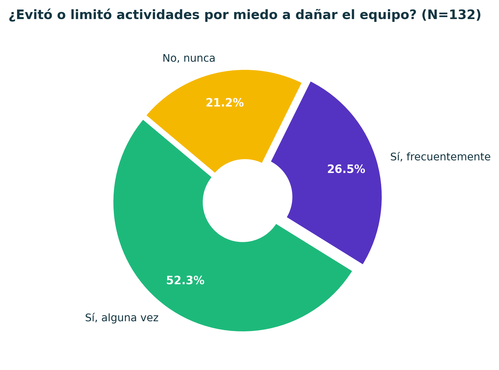
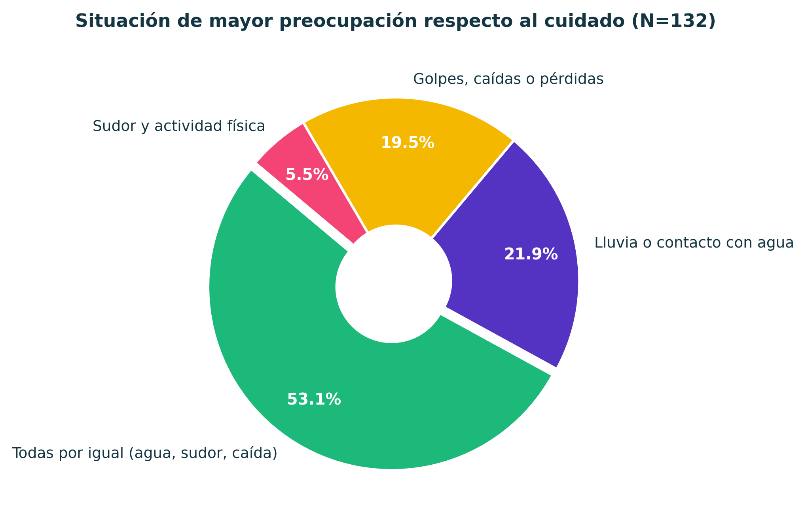
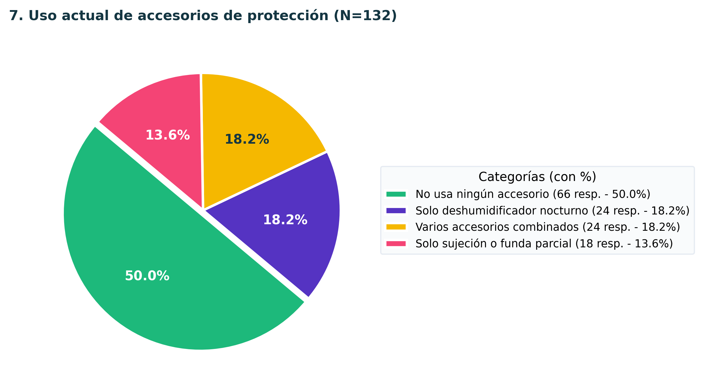
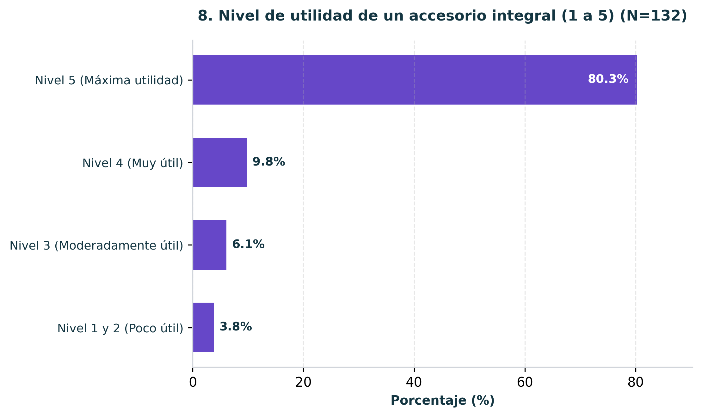
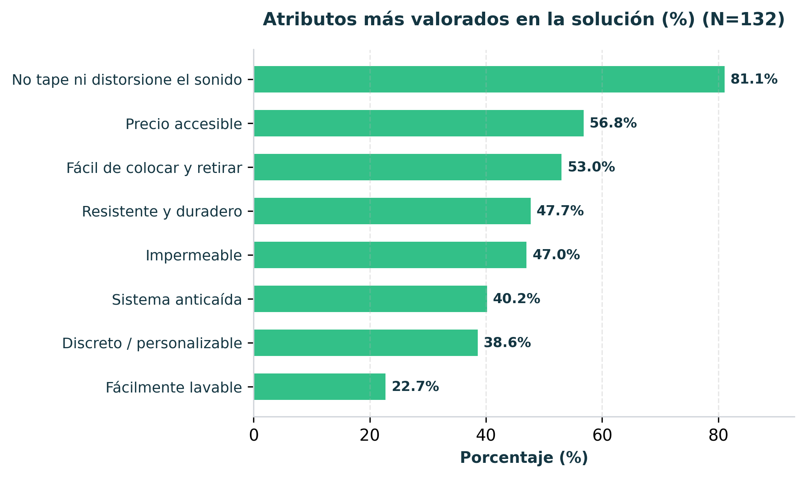
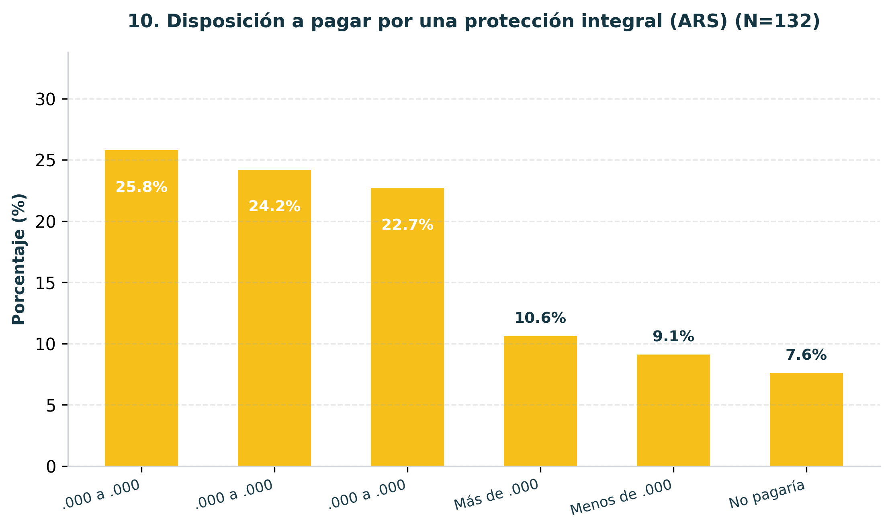

Desarrollamos una solución integral de protección física y climática para procesadores externos de implantes cocleares y audífonos retroauriculares. Buscamos devolver la libertad y seguridad en el deporte y la rutina diaria, sin aislar a las personas y sin perder nitidez acústica.
Un implante coclear o audífono retroauricular no es solo un equipo electrónico: es el puente directo con el mundo sonoro, la comunicación y la autonomía de una persona.
Analizamos las opciones que existen hoy en el mercado para entender por qué los usuarios siguen manifestando insatisfacción.
| Alternativa | Protección Brindada | Transparencia Sonora | Precio Mercado (ARS) | Limitación Crítica Detectada |
|---|---|---|---|---|
| Ear Gear (Funda de tela) | Polvo y transpiración leve | Buena (< 2 dB) | $20.000 - $38.000 | Se empapa con lluvia o sudor copioso; nula amortiguación ante caídas. |
| Cochlear Aqua+ (Funda silicona cerrada) | Inmersión total en agua | Regular (atenúa 4 a 6 dB) | $81.500 - $317.000 | Requiere desarmar antena e imán; excesivamente costoso y poco práctico para uso diario. |
| Otoclip / Diademas | Solo sujeción anticaída | Neutra (no cubre) | $17.000 - $52.000 | Cero resguardo ante agua, transpiración, arena o salpicaduras. |
| Deshumidificador Eléctrico | Secado posterior nocturno | N/A (se usa apagado) | $174.000 | Acción reactiva: no protege mientras la persona está entrenando o en la calle. |
| Propuesta AURA (Grupo 10) | Integral (Agua + Polvo + Impacto) | Óptima (< 2.5 dB) | $40.000 (Accesible) | Ergonomía de postura en <15s, permeable al sonido y con retención anticaída integrada. |
Realizamos un relevamiento directo con usuarios de implantes cocleares, audífonos y sus familias. Reorganizamos las respuestas en 4 categorías claras para comprender los hábitos reales y validar la necesidad del producto.
¿Qué es lo más importante al momento de evaluar un protector?
Respuestas directas extraídas de la pregunta abierta de la encuesta:
Explorá cada una de las 10 preguntas analizadas en nuestra investigación con sus gráficos categorizados:

El 68.9% de los encuestados son usuarios directos de implantes o audífonos, complementados por un 27.3% de madres, padres o familiares directos. Esto garantiza que la muestra tiene conocimiento vivencial y técnico directo del dolor cotidiano.

Los procesadores de Implante Coclear representan el 68.9% del universo relevado, mientras que los Audífonos Retroauriculares alcanzan el 22.0%. Ambos comparten la zona crítica detrás del pabellón auricular y la susceptibilidad al sudor.

Existe una distribución bimodal: un 42.4% de adultos activos (30 a 59 años) y un 25.0% de niños y adolescentes (hasta 17 años). Los jóvenes de 18 a 29 años representan el 22.7%.

El 65.1% de los encuestados realiza actividad física regular (48.5% varias veces a la semana y 16.7% a diario). La exposición al sudor y al movimiento no es una excepción, sino una constante semanal.

Un contundente 78.8% de las personas reconoció haber evitado situaciones placenteras, entrenamientos o salidas al aire libre por miedo a que se moje, se ensucie o se caiga su procesador.

La lluvia o tormenta repentina lidera con un 80.3% de menciones, seguida de cerca por el deporte intenso con sudor (67.4%), las caídas contra el piso (50.8%) y la arena de la playa (44.7%).

El 34.1% no utiliza absolutamente nada por incomodidad o costo, un 26.5% recurre a fundas de tela básicas (tipo Ear Gear) y un 25.8% usa clips o tanzas de sujeción. La funda sumergible solo es usada por el 9.8% por lo engorrosa que resulta.

El 90.1% de la comunidad califica la propuesta con las notas máximas de 4 y 5 sobre 5 (con un 66.7% otorgando la calificación máxima absoluta). El rechazo o indiferencia es inferior al 4%.

El atributo número 1 e innegociable es que no afecte la audición ni el sonido (81.1%), seguido de un precio accesible (56.8%), la facilidad y rapidez para colocarlo (53.0%) y la resistencia/durabilidad (47.7%).

El 42.4% se ubica en el rango de $20.000 a $40.000 ARS y un 22.7% pagaría entre $40.000 y $60.000 ARS. Sumados, validan un piso de precios competitivo que sustenta nuestro análisis de curva de demanda.
Cruzamos la disposición a pagar empírica con el modelo de cebolla del mercado argentino para fijar los parámetros productivos del proyecto.
Evaluación del porcentaje de usuarios dispuestos a adquirir el producto según el escalón de precio:
• Precio de Venta al Público (PVP con IVA): $40.000 ARS (valida el 59.1% de aceptación directa y genera el mayor ingreso total proyectado).
• Precio Neto (sin IVA 21%): $33.058 ARS.
• Precio Salida de Fábrica (PSF estimado): $26.000 ARS.
• Costo Variable Unitario Máximo: ≤ $13.000 ARS (cumple con holgura la regla de oro 2:1 exigida por la cátedra para el Objetivo I).
Segmentación paso a paso de la población para llegar a un volumen de producción alcanzable y realista:
Equivale a 125 unidades mensuales, un lote ideal para moldeo por inyección de silicona o termoformado.
Las 6 dimensiones fundamentales que definen el alcance y los límites técnicos del desarrollo antes de comenzar la etapa de bocetos.
Vulnerabilidad ambiental y mecánica del procesador ante sudor, lluvia, arena y caídas, que genera aislamiento preventivo y retiro forzoso del dispositivo en la vida activa.
Usuario: Niños/adolescentes (5-17 años) y adultos activos (18-60) con estilo de vida dinámico.
Comprador: Padres de niños con hipoacusia y adultos deportistas independientes.
Espacios deportivos (gimnasios, canchas, running), vía pública bajo lluvia o viento, playa y recreación al aire libre. Frecuencia de uso estimada: 3 a 7 días por semana.
Q = 1.500 unidades anuales (~125 unidades mensuales). Se fundamenta en una captura del 3.8% del SOM (39.400 personas) mediante canal audiológico y venta digital.
PVP: $40.000 ARS (IVA incluido).
PSF: $26.000 ARS.
Costo Variable Unitario Máximo: $13.000 ARS (asegura cumplimiento de la relación 2:1 del Objetivo I).
• Acústica: Pérdida de inserción ≤ 2.5 dB (500 a 4000 Hz).
• Estanqueidad: Protección mínima IP54 (salpicaduras y polvo).
• Masa: Peso pluma inferior a 8 gramos.
• Retención: Resistencia a tracción vertical ≥ 5 N.
• Ergonomía: Tiempo de colocación < 15 segundos.
• Biocompatibilidad: Silicona médica grado piel (ISO 10993).
El proceso metodológico del proyecto estructurado a lo largo del ciclo lectivo 2026.